소음진동기사(구) (2021-09-12 기출문제)
1과목: 소음진동개론
1. A공장에서 근무하는 근로자의 청력을 검사하였다. 검사 주파수별 청력손실이 표와 같을 때, 4분법 청력손실이 28dB이었다. 500Hz에서의 청력 손실은 몇 dB인가?
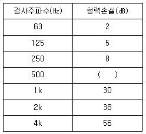
- 10
- 12
- 14
- 19
(정답률: 알수없음)

2. 진동감각에 관한 설명으로 틀린 것은?
- 15Hz 부근에서 심한 공진현상을 보이고, 2차적으로 40~50Hz 부근에서 공진현상이 나타나지만 진동수가 증가함에 따라 감쇠가 급격히 감소한다.
- 수직 및 수평진동이 동시에 가해지면 2배의 자각현상이 나타난다.
- 진동가속도레벨이 55dB 이하인 경우, 인체는 거의 진동을 느끼지 못한다.
- 진동에 의한 신체적 공진현상은 서 있을 때가 앉아 있을 때보다 약하게 느낀다.
(정답률: 알수없음)
3. 청력에 관한 설명으로 가장 거리가 먼 것은?
- 음의 대소(큰 소리, 작은 소리)는 음파의 진폭(음압)의 크기에 따른다.
- 사람 간 회화의 명료도는 200 - 6000Hz의 주파수 범위를 갖는다.
- 20Hz 이하는 초저주파음, 20kHz를 초과하는 것은 초음파라고 한다.
- 4분법 청력손실이 옥타브밴드 중심주파수 500 - 2000Hz 범위에서 15dB 이상이면 난청으로 분류한다.
(정답률: 알수없음)
4. 음과 관련한 법칙 및 용어의 설명으로 틀린 것은?
- 백색잡음은 모든 주파수의 음압레벨이 일정한 음을 말한다.
- 호이겐스 원리는 하나의 파면상의 모든점이 파원이 되어 각각 2차적인 구면파를 사출하여 그 파면들을 둘러싸는 면이 새로운 파면을 만드는 현상이다.
- 스넬의 법칙은 음의 회절과 관련한 법칙으로 장애물이 클수록 회절량이 크다.
- 웨버 - 훼흐너법칙은 감각량은 자극의 대수에 비례한다는 법칙이다.
(정답률: 알수없음)
5. 다음 정재파(standing wave)에 관한 설명으로 가장 적합한 것은?
- 음원에서 모든 방향으로 동일한 에너지를 방출할 때 발생하는 파
- 둘 또는 그 이상의 음파의 구저적 간섭에 의해 시간적으로 일정하게 음압의 최고와 최저가 반복되는 패턴의 파
- 음파의 진행방향으로 에너지를 전송하는 파
- 음원으로부터 거리가 멀어질수록 더욱 넓은 면적으로 퍼져나가는 파
(정답률: 알수없음)
6. 대기조건에 따른 공기흡음 감쇠효과에 관한 설명으로 옳은 것은?
- 습도가 낮을수록 감쇠치는 증가한다.
- 주파수가 낮을수록 감쇠치는 증가한다.
- 일반적으로 기온이 낮을수록 감쇠치는 작아진다.
- 공기의 흡음감쇠는 음원과 관측점의 거리에 거의 영향을 받지 않는다.
(정답률: 알수없음)
7. 지반을 전파하는 파에 관한 설명으로 틀린 것은?
- 지표진동 시 주로 계측되는 파는 R파이다.
- R파는 역2승볍칙으로 대략 감쇠된다.
- 표면파의 전파속도는 일반적으로 횡파의 92~96% 정도이다.
- 파동에너지비율은 R파가 S 파 및 P파에 비해 높다.
(정답률: 알수없음)
8. 점음원이 있는데 음원으로 부터 32m의 거리에서 음압레벨이 100dB이었다 . 1m 떨어진 위치에서의 음압레벨은 약 몇 dB인가?
- 100
- 110
- 120
- 130
(정답률: 알수없음)
9. 인간의 청각기관에 관한 설명으로 틀린 것은?
- 중이에 있는 3개의 청소골은 외이와 내이의 임피던스 매칭을 담당하고 있다.
- 달팽이관에서 실제 음파에 대한 센서부분을 담당하는 곳은 기저막에 위치한 섬모세포이다.
- 약 66mm 정도의 길이를 갖는 달팽이관에는 약 1000개에 달하는 작은 섬모세포가 분포한다.
- 달팽이관은 약 3.5 회전만큼 돌려져 있는 나선형 구조로 되어있다.
(정답률: 알수없음)
10. 잔향시간이란 실내에서 음원을 끈 순간부터 음압레벨이 얼마 감쇠되는데 소요되는 시간을 의미하는가?
- 40㏈
- 60㏈
- 80㏈
- 100㏈
(정답률: 알수없음)
11. 길이가 약 55㎝인 양단이 뚫린 관이 공명하는 기본음의 주파수는 약 및 ㎐인가? (단, 15℃기준이다.)
- 309
- 416
- 619
- 832
(정답률: 알수없음)
12. 등감각곡선(Equal perceived acceleration contour) 에 관한 설명으로 옳지 않은 것은?
- 일반적으로 수직 보정된 레벨을 많이 사용하며 그 단위는 dB(V)이다.
- 수직진동은 4~8Hz 범위에서 가장 민감하다.
- 등감각곡선에 기초하여 정해진 보정회로를 통한 레벨을 진동레벨이라 한다.
- 수직보정옥선의 주파수 대역이 4 ≤ f≤ 8Hz 일 때 보정치의 물리량은
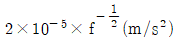
이다.
(정답률: 알수없음)
13. 가로 7m, 세로 3.5m의 벽면 밖에서 음압레벨이 112㏈이라면 15m떨어진 곳은 몇 ㏈인가? (단, 면음원 기준이다.)
- 76.4
- 85.8
- 88.9
- 92.8
(정답률: 알수없음)
14. 소음원(점음원)의 음향파워레벨 (PWL)을 측정하는 방법에 대한 이론식으로 틀린 것은? (단, PWL: 음향파워레벨(dB), R: 유효실정수, SPL: 평균음압레벨(dB), Q: 지향계수, r: 음원에서 측정점까지의 거리 (m) 이다.)
- 확산음장법 : PWL = SPL+20logR - 6dB
- 자유음장법 (자유공간) : PWL = SPL + 20logr + lldB
- 자유음장법(반자유공간) : PWL = SPL+20logr+8dB
- 반확산음장법 :
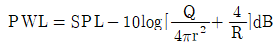
(정답률: 알수없음)
15. 다음 소음 용어의 표시로 옳은 것은?
- PNL: 철도소음 평가지수
- WECPNL: 항공기 소음 평가량
- NRN: 소음통계레벨
- Leq: 주야 평균소음레벨
(정답률: 알수없음)
16. 종파에 관한 설명으로 틀린 것은?
- 파동의 진행방향과 매질의 진동방향이 일치한다.
- 매질이 없어도 전파된다.
- 음파와 지진파의 P파가 해당한다.
- 물체의 체적 변화에 의해 전달된다.
(정답률: 알수없음)
17. 진동계에서 진동속도에 대한 설명으로 가장 적합한 것은?
- 질량의 진동속도에 대한 스프링 저항력의 비이다.
- 점성 저항력에 대한 변위력의 비이다.
- 질량의 열에너지에 대한 진동속도의 비이다.
- 스프링 정수에 대한 무게의 비이다.
(정답률: 알수없음)
18. 28℃ 공기 중에서 음압진폭이 32N/m2일 때 입자속도는 약 몇 m/s인가?
- 0.025
- 0.035
- 0.⑤5
- 0.085
(정답률: 알수없음)
19. 다음은 청각기관의 구조에 관한 설명이다. ( )에 알맞은 것은?
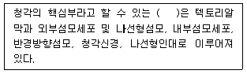
- 청소골
- 난원창
- 세반고리판
- 코르티기관
(정답률: 알수없음)
20. 다음 주파수 대역 중 인체가 가장 민감하게 느끼는 진동(수직 및 수평) 주파스 범위은?
- 1 ~ 10㎐
- 1 ~ 2 ㎑
- 2 ~ 4 ㎑
- 20㎑ 이상
(정답률: 알수없음)
2과목: 소음방지기술
21. 실정수 400m2 인 옥내 중앙의 바닥위에 설치되어 있는 소형기계의 파워레벨이 80dB이다. 이 기계로부터 6m 떨어진 실내 한 점에서의 음압레벨(dB)은 얼마인가?
- 50.1
- 58.7
- 61.5
- 65.8
(정답률: 알수없음)
22. 다음은 흡음재의 1/3옥타브 대역에서 각 중심주파수에서의 흡음율 데이터이다. 이 흡음재의 감음계수(NRC)는 얼마인가?
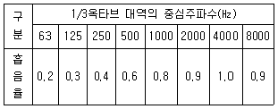
- 0.525
- 0.638
- 0.675
- 0.825
(정답률: 알수없음)
23. 흡음 덕트형 소음기에서 최대 감음 주파수의 범위로 가장 적합한 것은? (단, λ : 대상음의 파장(m), D : 덕트의 내경(m)이다.)
- λ/2 ＜ D ＜ λ
- λ ＜ D ＜ 2λ
- 2λ ＜ D ＜ 4λ
- 4λ ＜ D ＜ 8λ
(정답률: 알수없음)
24. 2kHz의 음향파워가 100 dB인 소음원에 방음상자를 설치하였다. 방음상자를 투과한 후에 2kHz 의 음향파워가 70 dB이 었을 때 방음상자의 투과손실 (TL)은 약 몇 dB인가? (단, 방음상자 음향투과부의 면적은 100m2, 방음상자 내부 전표면적은 150m2, 방음상자 내 평균흡음율은 0.5이다.)
- 25.4
- 28.2
- 30.8
- 35.7
(정답률: 알수없음)
25. 어느 전자공장 내 소음대책으로 다공질재료로 흡음매트공법을 벽체와 천정부에 각각 적용하였다. 작업장 규격은 25L×12W×5H(m)이고, 대책 전 바닥, 벽체, 천정부의 평균 흡음율은 각각 0.02, 0.⑤, 0.1이라면 잔향시간비(대책전/대책후)는 얼마인가? (단, 흡음매트의 평균 흡음율은 0.45 이다.)
- 2.9
- 4.3
- 5.7
- 6.2
(정답률: 알수없음)
26. 반무한 방음벽의 직접음 회절감쇠치가 20dB(A), 반사음 회절감쇠치가 15dB(A), 투과손실치가 18dB(A) 일 때, 이 벽에 의한 삽입손실치는 약 몇 dB(A) 인가? (단, 음원과 수음점이 지상으로부터 약간 높은 위치에 있다.)
- 11.1㏈
- 12.4㏈
- 14.3㏈
- 17.8㏈
(정답률: 알수없음)
27. 기계 장치의 취축구 소음을 줄이기 위한 대책으로 가장 적절하지 않은 것은?
- 취출구의 유속을 감소시킨다.
- 취출구 부위를 방음상자로 밀폐 처리한다.
- 취출관의 내면을 흡음 처리한다.
- 취출구에 소음기를 장착한다.
(정답률: 알수없음)
28. 공기 중의 어떤 음원에서 발생한 소리가 콘크리트벽(ρ=900kg/m3, E= 2.0×109N/m2)에 수직입사 할 때, 이 벽체의 반사율은 약 얼마인가? (단, 공기밀도 1.2kg/m3, 음속 340m/s 이다.)
- 0.4
- 0.6
- 0.8
- 1.0
(정답률: 알수없음)
29. 다공질형 흡음재 부착에 관한 설명이다. ( )안에 가장 알맞은 것은?
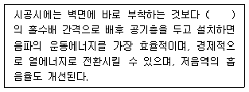
- 입자속도가 최대로 되는 1/2파장
- 입자속도가 최대로 되는 1/3파장
- 입자속도가 최대로 되는 1/4파장
- 입자속도가 최대로 되는 1/6파장
(정답률: 알수없음)
30. 어느 공장의 소음원에 대한 소음방지대책의 방지계획을 아래의 순서와 같이 세우고자 한다. A ~ E 안의 내용으로 알맞은 것은?
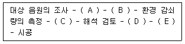
- (A)소음레벨 측정 - (B)주파수 분석 - (C)감쇠량의 설정 - (D)방음설계 - (E)경제성 검토
- (A)소음레벨 측정 - (B)주파수 분석 - (C)감쇠량의 설정 - (D)경제성 검토 - (E)방음설계
- (A)감쇠량의 설정 - (B)소음레벨 측정 - (C)주파수 분석 - (D)경제성 검토- (E)방음설계
- (A)소음레벨 측정 - (B)감쇠량 설정- (C)주파수 분석 - (D)방음설계 - (E)경제성 검토
(정답률: 알수없음)
31. 차음재료 선정 및 사용상 유의사항으로 틀린 것은?
- 여러가지 재료로 구성된 벽의 차음효과를 높이기 위해서는 각 재료의 투과율이 서로 유사하지 않도록 주의한다.
- 큰 차음효과를 바라는 경우에는 다공질 흡음재를 충진한 이중벽으로 하고 공명투과주파수 및 일치주파수 등에 유의하여야 한다.
- 차음벽 설치 시 저주파음을 감쇠시키기 위해서는 이중벽으로서 공기층을 충분히 유지시킨다.
- 기진력이 큰 기계가 설치된 공장의 차음벽은 진동에 의한 차음효과 감소를 고려해야 한다.
(정답률: 알수없음)
32. 대형 작업장의 공조 덕트가 민가를 향해 있어 취출구 소음이 문제되고 있다. 이에 대한 대책으로 틀린 것은?
- 취출구 끝단에 소음기를 장착한다.
- 취출구 끝단에 철망 등을 설치하여 음의 진행을 세분 혼합하도록 한다.
- 취출구의 면적을 작게 한다.
- 취출구 소음의 지향성을 바꾼다.
(정답률: 알수없음)
33. 공장의 신설 및 증설시 소음방지계획에 필히 참고를 하여야 할 사항으로 가장 거리가 먼 것은?
- 지역구분에 따른 부지경계선에서의 소음레벨이 규제 기준 이하가 되도록 설계한다.
- 특정 공장인 경우는 방지계획 및 설계도를 첨부한다.
- 공장건축물, 구조물에 의한 방음설계, 기계자체 및 조합에 의한 방음설계의 계획을 세운다.
- 공장내에서 기계의 배치를 변경하든지 또는 소음 레벨이 큰 기계를 부지경계선에서 먼 곳으로 이전 설치한다.
(정답률: 알수없음)
34. 벽체의 한쪽 면은 실내, 다른 한쪽 면은 실외에 접한 경우 벽체의 투과손실 (TL)과 벽체를 중심으로 한 현장에서 실내 · 외간 음압레벨 차(NR, 차음도)와의 실용관계식으로 가장 적합한 것은?
- TL=NR - 3㏈
- TL=NR - 6㏈
- TL=NR - 9㏈
- TL=NR - 12㏈
(정답률: 알수없음)
35. 가로, 세로, 높이가 모두 4m 인 무향실 내에 소음원이 설치되어 있고 관심 주파수 영역에서 무향실의 흡음율은 1.0 이다. 소음원이 무향실 모서리가 맞닿는 구석에 위치한다면 이 때 지향계수는 얼마인가?
- 1
- 2
- 4
- 8
(정답률: 알수없음)
36. 다음 중 실내 평균 흡음율을 구하는 방법에 해당하는 것은?
- 잔향시간 측정에 의한 방법
- 관내법
- TL 산출법
- 정재파법
(정답률: 알수없음)
37. 실내에서 직접음과 잔향음의 크기가 같은 음원으로부터의 거리를 나타내는 실반경 (room radius, γ)을 구하는 식으로 옳은 것은? 단, Q 는 음원의 지향계수, R은 실정수이다.)
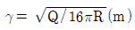
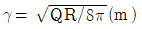
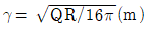
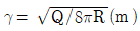
(정답률: 알수없음)
38. 기체가 흐르는 배관이나 덕트의 선상에 부착하여 협대역 저주파 소음을 방지하는데 탁월한 소음기형식으로 적절한 것은?
- 간섭형 소음기
- 흡음 적트형 소음기
- 챔버 팽창형 소음기
- 공동 공명기형 소음기
(정답률: 알수없음)
39. 주변이 고정된 얇은 금속원판의 직경을 각각 2배로 하였을 경우 공명기본음 주파수는 어떻게 되는가?
- 1/4배 감소
- 2배 증가
- 1/2배 감소
- 변화없다.
(정답률: 알수없음)
40. 소음원에 소음기를 부착하기 전과 후의 공간상 어떤 특정위치에서 측정한 음압레벨의 차와 그 측정위치를 의미하는 것을 무엇이라고 하는가?
- 동적 삽입손실치(DIL)
- 투과손실(TL)
- 삽입손실치(IL)
- 감음량(NR)
(정답률: 알수없음)
3과목: 소음진동 공정시험 기준
41. 소음기준 중 배경소음 측정이 필요하지 않은 것은?
- 소음환경기준
- 소음배출허용기준
- 생활소음규제기준
- 발파소음규제기준
(정답률: 알수없음)
42. 측정하고자 하는 진통레벨이 지시계기의 범위 내에 있도록 조정할 수 있는 장치로 l0dB간격으로 표시되어 있는 것은?
- 픽업
- 레벨레인지 변환기
- 증폭기
- 교정장치
(정답률: 알수없음)
43. 규제기준 중 생활진동 측정방법에서 측정시간 및 측정지점수 기준으로 옳은 것은?
- 당해 측정지점에서의 진동을 대표할 수 있는 시기를 선정하여 원칙적으로 연속 7일간 측정한다.
- 소음진동관리법 시행규칙에서 구분하는 각 시간대 중에서 최대진동이 예상되는 시각에 1지점 이상에서 측정한다.
- 시간 대별로 진동피해가 예상되는 시간대를 포함하여 2개 이상의 측정지점수를 선정하여 4시간 이상 간격으로 2회 이상 측정하여 산술평균한 값을 측정진동레벨로 한다.
- 피해가 예상되는 적절한 측정시각에 2지점 이상의 측정지점수를 선정 · 측정하여 그중 높은 진동레벨을 측정진동레벨로 한다.
(정답률: 알수없음)
44. 배출허용기준을 적용하기 위해 소음을 측정할 때 측정점에 담, 건물 등 장애물이 있을 때는 장애 물로부 터 소음원 방향으로 1 ~ 3.5m 떨어진 지점에서 소음을 측정하게 되어 있다. 이 경우는 장애물의 높이가 최소 몇 m 를 초과할 때 인가?
- 1.2
- 1.5
- 2.0
- 2.5
(정답률: 알수없음)
45. 철도진동 측정자료 평가표에 반드시 기재되어야 하는 사항으로 가장 거리가 먼 것은?
- 철도 레일길이
- 평균 승차인원(명/대)
- 열차통행량(대/hr)
- 평균 열차속도(km/hr)
(정답률: 알수없음)
46. 소음 · 진동공정시험기준 중 철도소음측정에 관한 설명으로 틀린 것은?
- 요일별로 소음변동이 적은 평일(월요일부터 금요일까지)에 측정한다.
- 주간 시간대는 2시간 이상 간격을 두고 1시간씩 2회 측정한다.
- 철도소음관리기준을 적용하기 위하여 측정하고자 할 경우에는 철도보호지구외의 지역에서 측정 · 평가한다.
- 샘플주기를 0.1초 내외로 결정하고 1시간 동안 연속 측정하여 자동 연산 · 기록한 등가소음도를 그 지점의 측정소음도로 한다.
(정답률: 알수없음)
47. 규제기준 중 발파진동 측정방법으로 틀린 것은?
- 진동레벨계만으로 측정할 경우에는 최고 진동레벨을 고정(hold)하지 않는다.
- 디지털 진동자동분석계로 측정진동레벨 측정시 샘플주기를 0.1초 이하로 놓는다.
- 디지털 진동자동분석계로 배경진동레벨 측정시 샘플주기를 1초 이내에서 결정하고 5분 이상 측정한다.
- 최대발파진동이 예상되는 시각의 진동을 포함한 모든 발파진동을 1지점 이상에서 측정한다.
(정답률: 알수없음)
48. 도로교통소음관리기준 측정방법으로 틀린 것은?
- 요일별로 소음변동이 적은 평일(월요일부터 금요일사이)에 당해지역의 측정하여야 한다.
- 당해지역 도로교통소음을 대표할 수 있는 시각에 4개 이상의 측정지점수를 선정하여 각 측정지점에서 2시간 이상간격으로 4회이상 측정하여 산술평균한 값을 측정소음도로 한다.
- 디지털 소음자동분석계를 사용할 경우 샘플주기를 1초 이내에서 결정하고 10분이상 측정하여 자동 연산 · 기록한 등가소음도를 그 지점의 측정소음도로 한다.
- 소음도의 계산과정에서는 소숫점 첫째자리를 유효숫자로 하고, 측정소음도(최종값)는 소숫점 첫째자리에서 반올림한다.
(정답률: 알수없음)
49. 소음진동공정시험기준상 소은과 관련된 용어의 정의로 틀린 것은?
- 지시치 : 계기나 기록지 상에서 판독한 소음도로서 실효치(rms값)를 말한다.
- 소음도 : 소음계의 청감보정회로를 통하여 측정한 지시치를 말한다.
- 평가소음도 : 측정소음도에 배경소음을 보정한 후 얻어진 소음도를 말한다.
- 등가소음도 : 임의의 측정 시간 동안 발생한 변동소음의 총 에너지를 같은 시간 내의 정상소음의 에너지로 등가하여 얻어진 소음도를 말한다.
(정답률: 알수없음)
50. 기상조건 등을 고려하여 당해 지역의 소음을 대표할 수 있는 주간 시간대는 2시간 간격을 두고 1시간씩 2회 측정하여 산술평균하며, 야간 시간대는 1회 1시간 동안 측정하는 소음은?
- 환경소음
- 철도소음
- 발파소음
- 생활소음
(정답률: 알수없음)
51. 항공기 통과시 1일 최고소음도 측정결과가 각각 99dB(A), 100dB(A), 101dB(A), 102dB(A), 103dB(A), 104dB(A), 1⑤dB(A), 106dB(A), 107dB(A), 108dB(A) 이었고, 0시 ~ 07시까지 1 대, 07 ~ 19시까지 6대, 19시 ~ 22시까지 2대, 22시 ~ 24시까지 1대가 통과할 때 1일 단위의 WECPNL은?
- 92
- 95
- 97
- 99
(정답률: 알수없음)
52. 소음진동공정시험기준상 공장소음 측정자료 평가표에 기재해야 하는 항목으로 가장 거리가 먼 것은?
- 측정대상업소 소재지
- 평균소음도
- 측정대상업소의 소음원(기계명)
- 측정 소음계명
(정답률: 알수없음)
53. 표준음 발생기의 발생음의 오차 범위기준으로 옳은 것은?
- ±10㏈ 이내
- ±5㏈ 이내
- ±1㏈ 이내
- ±0.1㏈ 이내
(정답률: 알수없음)
54. 소음 측정기의 청감 보정회로를 C 특성에 놓고 측정한 결과치가 A 특성에 놓고 측정한 결과치보다 클 경우 소음의 주된 음역은?
- 저주파역
- 중주파역
- 고주파역
- 광대역
(정답률: 알수없음)
55. 소음진동 공정시험기준상 소음계의 구조별 선능기준으로 가장 거리가 먼 것은?
- 마이크로폰은 기기의 본체와 분리가 가능하여야 한다.
- 증폭기는 마이크로폰에 의하여 음향에너지를 전기에너지로 변환시킨 양을 증폭시키는 장치를 말한다.
- 동특성조절기는 지시계기의 반응속도를 빠름 및 느림의 특성으로 조절할 수 있는 조절기를 가져야 한다
- 출력단자는 소음신호를 기록기 등에 전송할 수 있는 직류 단자를 갖춘 것이어야 한다.
(정답률: 알수없음)
56. 다음은 항공기소음 한도 측정자료 분석에 관한 설명이다. ( )안에 알맞은 것은?
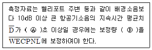
- Ⓐ 10, Ⓑ [+10log(
 /20)]
/20)] - Ⓐ 10, Ⓑ [+20log(
 /l0)]
/l0)] - Ⓐ 30, Ⓑ [+10log(
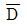
/20] - Ⓐ 30, Ⓑ [+20log(
 /10]
/10]
(정답률: 알수없음)
57. A단조공장의 부지경계선에서 측정한 측정진동레벨이 배경진동레벨보다 12dB 크게 나타났다. 이 때 대상진동레벨로 정하는 기준으로 옳은 것은?
- 대상진동레벨은 배경진동레벨과 같다.
- 측정진동 레벨이 대상진동레벨이 된다.
- 대상진동레벨은 측정진동레벨에 10dB를 보정한 값이다.
- 재 측정하여 그 차가 9dB이하가 되도록 보정한다.
(정답률: 알수없음)
58. A기계를 가동시킨 후 측정진동레벨이 79dB(V)이었고, 이 기계를 정지시키고 배경진동레벨을 측정하였더니 74dB(V)이었다. 이 경우 대상진동레벨(dB(V))은?
- 75
- 77
- 78
- 79
(정답률: 알수없음)
59. 배출허용기준 진동측정방법 중 시간의 구분은 보정표의 시간별 항목의 기준에 따라야하는데 가동시간으로 가장 적합한 것은?
- 측정 당일전 30 일간의 정상가동시간을 산술평균한다.
- 측정 3일전 20일간의 정상가동시간을 산술평균한다.
- 측정 5일전 30일간의 정상가동시간을 산술평균한다.
- 측정 7일전 20일간의 정상가동시간을 산술평균한다.
(정답률: 알수없음)
60. 생활소음 측정자료 평가표에 반드시 기재해야 할 사항으로 가장 거리가 먼 것은?
- 측정대상의 소음원과 측정지점
- 측정기기의 부속장치
- 측정자의 소속과 직명, 성명
- 측정에 투입된 총인원 수 및 기술사항
(정답률: 알수없음)
4과목: 진동방지기술
61. 진동방지대책을 발생원대책, 전파경로대책, 수진대상대책으로 구분할 때, 다음 중 일반적으로 전파경로대책에 해당하는 것은?
- 완충지역 설치
- 진동 전달감소장치 사용
- 기초의 질량 및 강성증가
- 건물구조 개조
(정답률: 알수없음)
62. 방진재료로 금속스프링을 사용하는 경우 로킹모션(rocking motion)이 발생하기 쉽다. 이를 억제하기 위한 방법으로 틀린 것은?
- 기계 중량의 1 ~ 2배 정도의 가대를 부착한다.
- 하중이 평형분포 되도록 한다.
- 스프링의 정적 수축량이 일정한 것을 사용한다.
- 길이가 긴 스프링을 사용하여 계의 무게중심을 높인다.
(정답률: 알수없음)
63. 진동원이 지표상에서 전파할 때 진동파의 특성별로 에너지 비의 크기가 다르다. 다음 중 지표상에서 진동전파 에너지의 순서가 크기순으로 올바르게 나열된 것은?
- S파 > P파 > R파
- S파 > R파 > P파
- R파 > S파 > P파
- R파 > P파 > S파
(정답률: 알수없음)
64. 다음 중 진동에 공진형상이 일어나면 어느 진동특성이 증가하는가?
- 주파수
- 위상
- 파장
- 진폭
(정답률: 알수없음)
65. 다음 가속도레벨에 대한 설명으로 틀린 것은?
- 가속도형 진동픽업은 진동가속도에 비례한 출력을 얻는 픽업이다.
- 가속도레벨은 진동가속도의 실효값을 대수표시한 양이다.
- 가속도레벨의 단위는 dB이다.
- 가속도레벨의 기준 진동가속도(0 dB)는 10-3m/s2이다.
(정답률: 알수없음)
66. 2개의 조화운동 X1=9cosωt, X2=12sinωt를 합성하면 최대진폭(cm)은 얼마인가? (단, 진폭의 단위는 cm로 한다.)
- 3
- 9
- 12
- 15
(정답률: 알수없음)
67. 다음 중 하중의 변화에 따라 고유진동수를 일정하게 할 수 있고, 부하 능력이 광범위하고 자동제어가 가능한 방진 시설은?
- 공기 스프링
- 방진 고무
- 금속 스프링
- 진동 절연
(정답률: 알수없음)
68. 20℃의 공기 중 밀도 2300kg/m3, 프아송비 0.17, 영율 2.7×1010N/m2, 두께 10cm인 콘크리트 벽의 최저 일치 주파수 (Hz)는 얼마인가?
- 461.6
- 375.7
- 283.1
- 186.5
(정답률: 알수없음)
69. 방진재료 중 공기스프링은 다음 중 고유진동수가 몇 Hz 이하를 요구할 때 주로 사용하는가?
- 5㎐
- 100㎐
- 150㎐
- 200㎐
(정답률: 알수없음)
70. 특성 임피던스가 26×105kg/m2 · s 인 금속관의 플랜지 접속부에 특성 임피던스가 2.8×103kg/m2 · s의 고무를 넣어 제진(진동절연)할 때의 진동감쇠량(dB)은 얼마인가?
- 19.4
- 21.1
- 23.7
- 27.8
(정답률: 알수없음)
71. 그림 (a)와 같은 진동계의 스프링을 압축하여 그림 (b)와 같이 만들었다. 압축된 후의 고유진동수는 처음에 비해 어떻게 변하는가? (단, 다른 조건은 변함없다고 가정한다.)
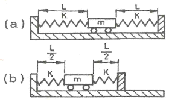
- 2배로 된다.
- √2배로 된다.
- 1/√2로 된다.
- 변하지 않는다.
(정답률: 알수없음)
72. 비감쇠 강제진동에서 진동 전달률이 0.1이 되기 위해 진동수비(ω/ωn)는 얼마이어야 하는가?
- 20.8
- 2.45
- 3.32
- 4.58
(정답률: 알수없음)
73. 가진력을 저감시키는 방법으로 틀린 것은?
- 단조기는 단압프레스로 교체한다.
- 기계에서 발생하는 가진력의 경우 기계설치 방향을 바꾼다.
- 크랭크 기구를 가진 왕복운동기계는 복수개의 실린더를 가진 것으로 교체한다.
- 터보형 고속회전압축기는 왕복운동압축기로 교체한다.
(정답률: 알수없음)
74. 방진고무의 특징에 대한 설명으로 틀린 것은?
- 고무자체의 내부마찰에 의해 저항이 발생하기 때문에 고주파 진통의 차진에는 사용 할 수 없다.
- 형상의 선택이 비교적 자유롭다.
- 공기 중의 O3에 의해 산화된다.
- 내부마찰에 의한 발열 때문에 열화되고, 내유 및 내열성이 약하다.
(정답률: 알수없음)
75. 그림과 같은 보의 횡진동에서 좌단의 경계조건을 옳게 표시한 것은?
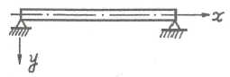
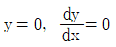
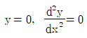
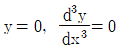
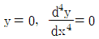
(정답률: 알수없음)
76. 그림과 같이 질량 m인 물체가 외팔보의 자유단에 달려있을 때 계의 진동의 고유진동수(fn)를 구하는 식으로 옳은 것은? (단, 보의 무게는 무시, 보의 길이는 L, 강성계수 E, 면적관성모멘트 I 이다.)
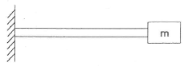
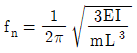
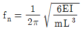
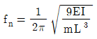
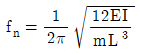
(정답률: 알수없음)
77. 전기모터가 1800rpm의 속도로 기계장치를 구동시킨다. 이 시스템은 고무깔개 위에 설치되어 있고 고무깔개는 0.5cm의 정적처짐을 나타내며, 고무깔개의 감쇠비는 0.2이다. 기초에 대한 힘의 전달율은 얼마인가?
- 0.08
- 0.11
- 0.16
- 0.21
(정답률: 알수없음)
78. 진동 감쇠에 관한 설명이다. ( )안에 들어갈 내용으로 옳은 것은?
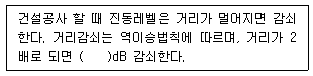
- 2
- 4
- 6
- 8
(정답률: 알수없음)
79. 충격에 의해서 가진력이 발생하고 있다. 충격력을 처음의 50%로 감소시키려면 계의 스프링 정수는 어떻게 변화되어야 하는가? (단, k는 처음의 스프링 정수)
- 2k
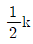
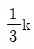
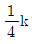
(정답률: 알수없음)
80. 송풍기가 1200rpm으로 운전하고 있다. 중심회전축에서 30cm 떨어진 곳에 40g의 질량이 더해서 진동을 유발하고 있다. 이 때 이 송풍기의 정적불평형가진력(N)은?
- 97.3
- 115.3
- 198.5
- 270.1
(정답률: 알수없음)
5과목: 소음진동 관계 법규
81. 소음 · 진동관리법령상 교통소음 · 진동의 규제와 관련한 행정처분기준 중 운행차 수시점검의 결과 소음기나 소음덮개를 떼어버리거나 경음기를 추가로 부착한 경우의 1차 행정처분기준으로 옳은 것은?
- 인증취소
- 폐쇄명령
- 개선명령
- 허가취소
(정답률: 알수없음)
82. 환경정책기본법령상 「의료법」에 따른 종합병원의 부지경계로부터 50미터 이내의 지역에서 낮 시간대(06:00 ~ 22:00) 소음환경기준(Leq dB(A))으로 옳은 것은? (단, 지역은 일반지역이다. )
- 70
- 65
- 55
- 50
(정답률: 알수없음)
83. 소음 · 진통관리법령상 야간시간대(22:00~06:00)에 주거지역과 상업지역의 도로교통소음 한도기준(LeqdB (A))은 각각 얼마인가?
- 주거지역 : 65, 상업지역 : 73
- 주거지역 : 60, 상업지역 : 65
- 주거지역 : 58, 상업지역 : 63
- 주거지역 : 55, 상업지역 : 60
(정답률: 알수없음)
84. 주택건설기준 등에 관한 규정상 소음방지대책의 수립과 소음 둥으로부터의 보호에 관련된 기준으로 틀린 것은?
- 사업주체는 공동주택을 건설하는 지점의 소음도가 65데시벨 미만이 되도록 한다.
- 실외소음도와 실내소음도의 소음측정기준은 국토교통부장관이 결정하여 고시한다.
- 공동주택등은 「대기환경보전법」에 따른 특정대기유해물질을 배출하는 공장으로부터 수평거리 50미터 이상 떨어진 곳에 배치해야 한다.
- 공동주택등을 배치하려는 지점에서 동법령으로 정하는 바에 따라 측정한 공장(소음배출시설이 설치됨)의 소음도가 50데시벨 이하로서 공동주택동에 영향을 미치지 않으면, 공동주택동은 해당 공장으로부터 수평거리 50미터 이내에 배치할 수 있다.
(정답률: 알수없음)
85. 방음시설의 성능 및 설치기준상 방음시설의 설치에 대한 설명으로 틀린 것은?
- 방음시설의 높이는 방음시설에 의한 삽입손실에 따라 결정되며, 계획시의 삽입손실은 방음시설 설치대상지역의 소음목표기준과 수음점의 소음실측치(또는 예측치)와의 차이이상으로 한다.
- 방음시설의 길이는 방음시설 측단으로 입사하는 음의 영향을 고려하여 설계목표를 충분히 달성할 수 있는 길이로 결정하여야 한다.
- 방음시설 발주자는 방음시설의 설치가능한 장소중 소음저감을 극대화할 수 있는 지점에 설치하여야 한다.
- 방음시설 발주자는 방음효과의 증대를 위하여 방음벽 설치위치를 도로측면으로 한정한다.
(정답률: 알수없음)
86. 소음 · 진동관리법령상 철도 진동의 관리기준(한도, dB(V))은? (단, 야간(22:00~06:00), 국토의 계획 및 이용에 관한 법률상 주거지역 기준)
- 50
- 55
- 60
- 65
(정답률: 알수없음)
87. 환경정책기본법령상 용어의 정의로 거리가 먼 것은?
- “환경개선”이란 환경오염 및 환경훼손으로부터 환경을 보호하고 오염되거나 훼손된 환경을 개선함과 동시에 쾌적한 환경의 상태를 유지 · 조성하기 위한 행위를 말한다.
- “자연환경”이란 지하 · 지표(해양을 포함한다) 및 지상의 모든 생물과 이들을 둘러싸고 있는 비생물적인 것을 포함한 자연의 상태(생태계 및 자연경관을 포함한다)를 말한다.
- ‘환경훼손”이 란 야생통식물의 남획 및 그 서식지의 파괴, 생태계질서의 교란, 자연경관의 훼손, 표토의 유실 등으로 자연환경의 본래적 기능에 중대한 손상을 주는 상태를 말한다.
- “생활환경”이란 대기, 물, 토양, 폐기물, 소음 · 진동, 악취, 일조, 인공조명, 화학물질 등 사람의 일상생활과 관계되는 환경을 말한다.
(정답률: 알수없음)
88. 소음 · 진통관리법령상 소음을 방지하기 위한 방음시설의 성능 · 설치기준 및 성능평가 등 사후관리에 필요한 사항을 정하여 고시할 수 있는 사람은?
- 환경부장관
- 시 · 도지사
- 시장 · 군수 · 구청장
- 국토교통부장관
(정답률: 알수없음)
89. 소음 · 진동관리법령상 소음발생장소로서 “환경부령으로 정하는 장소”가 아닌 것은?
- 「체육시설의 설치 · 이용에 관한 법률」에 따른 체육도장업
- 「학원의 설립 · 운영 및 과외교습에 관한 법률」에 따른 외국어 교습을 위한 학원
- 「식품위생법 시행령 」에 따른 단란주점영업
- 「음악산업진홍에 관한 법률」에 따른 노래연습장업
(정답률: 알수없음)
90. 다음은 소음 · 진동관리법령상 배출시설의 변경신고 등에 관한 사항이다. ( )안에 알맞은 것은?
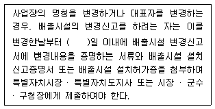
- 30
- 60
- 90
- 120
(정답률: 알수없음)
91. 소음 · 진동관리법령상 인증시험대행기관과 관련한 행정처분기준 중 거짓이나 그 밖의 부정한 방법으로 지정을 받은 경우 1차 행정처분기준으로 옳은 것은?
- 지정취소
- 업무정지 6월
- 업무정지 3월
- 업무정지 1월
(정답률: 알수없음)
92. 소음 · 진동관리법령상 공장소음 배출허용기준에서 다음 지역과 시간대 중 배출허용기준치가 가장 엄격한 조건은? (단, 예외조항 무시하고 일반적인 기준치로 본다.)
- 도시지역 중 녹지지역(취락지구)의 낮시간대
- 도시지역 중 일반주거지역의 저녁시간대
- 농림지역의 밤시간대
- 도시지역 중 전용주거지역의 저녁시간대
(정답률: 알수없음)
93. 소음 · 진동관리법령상 소음 · 진동 배출시설을 설치한 공장에서 나오는 소음 · 진동의 배출허용기준을 초과한 경우 행정처분기준으로 옳은 것은?
- 1차 - 개선명령
- 2차 - 경고
- 3차 - 조업정지
- 4차 - 폐쇄
(정답률: 알수없음)
94. 소음 · 진동관리법령상 시장 · 군수 · 구청장의 허가를 받아 배출시설을 설치하여야 하는 지역의 범위로 옳은 것은?
- 「의료법」에 따른 종합병원의 부지 경계선으로부터 직선거리 200미터 이내의 지역
- 「도서관법」에 따른 공공도서관의 부지 경계선으로부터 직선거리 50미터 이내의 지역
- 「초 · 중등교육법」및 「고둥교육법」에 따른 학교의 부지 경계선으로부터 직선거리 100미터 이내의 지역
- 「주택법」에 따른 공동주택의 부지 경계선으로부터 직선거리 150미터 이내의 지역
(정답률: 알수없음)
95. 소음 · 진동관리법령상 운행차 수시점검에 따르지 아니하거나 지장을 주는 행위를 한 자에 대한 별칙기준으로 옳은 것은?
- 3년 이하의 징역 또는 1500만원 이하의 벌금
- 1년 이하의 징역 또는 1000만원 이하의 벌금
- 6개월 이하의 징역 또는 500만원 이하의 벌금
- 300만원 이하의 벌금
(정답률: 알수없음)
96. 소음 · 진동관리법령상 소음방지시설이 아닌 것은?
- 방음외피시설
- 방음지지시설
- 방음림 및 방음언덕
- 흡음장치 및 시설
(정답률: 알수없음)
97. 소음 · 진동관리법령상 환경부장관은 이 법의 목적을 달성하기 위하여 관계 기관의 장에게 요청할 수 없는 조치는?
- 도시재개발사업의 변경
- 주택단지 조성의 변경
- 산업단지 조성의 제한
- 도로 · 철도 · 공항 주변의 공동주태 건축허가의 제한
(정답률: 알수없음)
98. 소음 · 진동관리법령상 자동차의 종류 중 이륜자동차의 규모기준으로 옳은 것은? (단, 2015년 12월 8 일 이후 제작되는 자동차 기준이다.)
- 엔진배기량이 50cc 이상이고, 차량총중량이 5백킬로그램을 초과하지 않는 것
- 엔진배기량이 50cc 이상이고, 차량총중량이 1천킬로그램을 초과하지 않는 것
- 엔진배기량이 80cc 이상이고, 차량총중량이 5백킬로그램을 초과하지 않는 것
- 엔진배기량이 80cc 이상이고, 차량총중량이 1천킬로그램을 초과하지 않는 것
(정답률: 알수없음)
99. 소음 · 진동관리법령상 대수기준시설 및 기계 · 기구 중 소음배출시설에 해당하는 기준이 아닌 것은?
- 자동제병기
- 30대 이상의 직기(편기는 제외)
- 4대 이상의 시멘트벽돌 및 블록의 제조기계
- 제관기계
(정답률: 알수없음)
100. 소음 · 진동관리법령상 소음도 검사기관의 지정기준에 있는 기술인력 중 기술직에 해당되지 않는 자는? (단, 해당 분야는 소음·진동 관련 분야이다.)
- 해당 분야가 아닌 분야의 전문학사학위를 취득하고, 소음 · 진동 관련 분야의 실무에 종사한 경력이 3년 이상인 사람
- 해당 분야의 기술사 자격을 취득한 사람
- 해당 분야 학사학위를 취득하고, 해당 분야의 실무에 종사한 경력이 1년 이상인 사람
- 해당 분야의 기사 자격을 취득하고, 해당 분야의 실무에 종사한 경력이 1년 이상인 사람
(정답률: 알수없음)